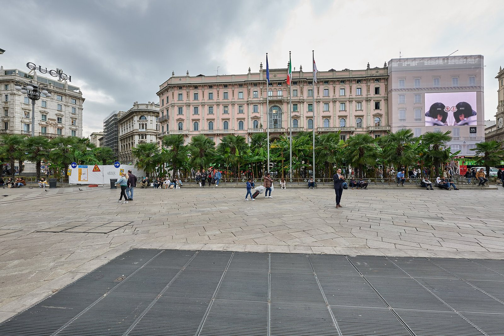

Attualità · Italia
L'Italia che non arriva a fine mese
Tir fermi, scaffali vuoti, piazze in fiamme: in due settimane il carovita è diventato la questione numero uno del Paese. E il calendario degli scioperi dice che non è finita.

Al Sud si spengono i motori
Tutto comincia a inizio ottobre, lontano dai riflettori. In Calabria e in Puglia gli autotrasportatori fermano i camion contro il prezzo del gasolio, arrivato a sfiorare i 2,30 euro al litro. In pochi giorni la protesta si allarga a Campania, Sicilia, Basilicata e Molise, fino al Lazio.
Nella notte tra il 18 e il 19 ottobre i blocchi chiudono il nodo tra A1 e A30 nel Casertano. Al porto di Napoli viene bloccato un varco, in Sicilia si fermano gli scali.
E quando i camion si fermano, si svuotano gli scaffali. Tra Caserta, Napoli, Catanzaro e la Sicilia mancano soprattutto i prodotti freschi. Agli autotrasportatori si sono uniti agricoltori, commercianti e in alcuni casi studenti.
Martedì 20 ottobre, nella prefettura di Milano, il ministro dei Trasporti Matteo Salvini ha incontrato associazioni e comitati della protesta. Il governo ha parlato di "un miliardo" di sostegni, ma secondo Il Fatto Quotidiano i fondi davvero nuovi si fermano a 160 milioni: il resto sono crediti d'imposta sul gasolio già previsti e attesi da mesi. I comitati siciliani e calabresi hanno sospeso i blocchi, quelli campani no: i presidi restano fino al 27 ottobre, giorno del nuovo incontro con il ministro. Il 22 ottobre il Consiglio dei ministri ha approvato un decreto per l'autotrasporto.
Sabato 17: tredici città in piazza
Mentre al Sud si bloccano le autostrade, sui social nasce un movimento che si chiama "Italia in piazza". Si definisce apolitico e apartitico e chiede una cosa sola: che si parli di carovita, carburanti, stipendi bassi e tasse.
Sabato 17 ottobre i cortei sfilano in tredici città, da Milano a Napoli. In piazza ci sono soprattutto giovani e giovanissimi. A Milano il corteo parte in modo pacifico da piazza Duomo. Poi alcune centinaia di ragazzi vestiti di nero, in gran parte col volto coperto, attaccano la polizia con pietre, transenne, bottiglie e bombe carta. Scene simili a Torino e a Bologna. A Roma, invece, nessuna criticità.
Domenica 18: il giorno dei saccheggi
Il giorno dopo a Milano non c'è nessun corteo. C'è un passaparola su TikTok: "Ci vediamo in Duomo". Gruppi di ragazzini incappucciati colpiscono con mini-blitz: saccheggiati un supermercato in via Torino, un negozio di articoli sportivi, diverse vetrine tra Cordusio e il Carrobbio.
Il bilancio dei due giorni è pesante: 271 persone portate in questura, 220 delle quali minorenni. Gli arrestati sono 11 maggiorenni e 35 minorenni. Quattordici gli agenti feriti.
Nei giorni successivi sono arrivate le convalide. Per i minorenni arrestati domenica, il Tribunale per i minorenni ha disposto il carcere per tre ragazzi e i domiciliari o la comunità per altri 21. Il gip che ha giudicato i primi maggiorenni ha visto negli scontri un progetto preciso per destabilizzare l'ordine pubblico. Un'altra giudice ha scritto che i social possono fare da detonatore della violenza.
Chi c'era davvero in piazza
Ridurre tutto ai saccheggi sarebbe comodo, ma incompleto. Il Fatto Quotidiano ha raccolto le voci dei ragazzi delle periferie milanesi. Uno di loro dice di essere stanco di vedere i genitori preoccupati per ogni spesa.
Il saccheggio resta un reato, non una forma di protesta. Ma la domanda che lasciano questi giorni è un'altra: perché così tanti ragazzi di quindici anni sentono di non avere futuro?
Sabato 24: la prima piazza con le nuove regole
Una settimana dopo, i ragazzi sono tornati in piazza. Il Movimento 17 ottobre, una sigla nata sui social dopo i primi cortei, aveva convocato manifestazioni in otto città. All'ultimo ha cancellato i punti di ritrovo annunciati, compresa piazza Duomo, promettendo di comunicarli all'ultimo minuto.
A Milano, presidiata da circa 1.400 tra agenti e militari, hanno sfilato circa diecimila persone, in gran parte giovani. Il corteo, deviato lontano dal Duomo, si è chiuso davanti al Politecnico. Qualche momento di tensione in corso Venezia, ma nessun saccheggio: secondo Confcommercio, "ha prevalso la ragionevolezza". Più tesa la giornata a Torino, Roma e Bologna, con lanci di oggetti, cariche e idranti.
Il bilancio nazionale del Dipartimento di pubblica sicurezza: 4.292 persone identificate, 371 accompagnate in questura, di cui 110 minorenni, 9 arresti e 87 denunce. Il trentenne ritenuto l'ideatore della pagina del Movimento 17 ottobre è stato portato in questura a Milano ed è indagato dalla procura per istigazione a delinquere.
Cosa succede adesso
La mobilitazione ha già un calendario:
- 27 ottobre: nuovo incontro tra il ministro Salvini e gli autotrasportatori. In Campania i presidi sono annunciati almeno fino a quel giorno.
- 30 ottobre: sciopero generale dei sindacati di base (USB, CUB, USI-CIT), settore pubblico e privato. Treni fermi dalle 21 del 29 alle 20:59 del 30.
- 20 novembre: sciopero generale della Cgil, annunciato da Maurizio Landini dal palco di Roma proprio sabato 17.
Il governo, intanto, ha risposto con un nuovo decreto sicurezza, in vigore dal 23 ottobre: ne abbiamo parlato in Il decreto cortei è costituzionale?.
Fonti
- Geopop: le proteste degli autotrasportatori
- ANSA, 19 ottobre 2026: chiuso il nodo A1-A30
- Il Fatto Quotidiano, 20 ottobre 2026: un miliardo annunciato, 160 milioni nuovi
- PMI.it: blocchi sospesi in Sicilia e Calabria, decreto autotrasporto
- Quotidiano Nazionale, 21 ottobre 2026: la protesta in Campania
- The Social Post, 17 ottobre 2026: Italia in piazza
- MilanoToday: i saccheggi del 18 ottobre
- Sky TG24, 20 ottobre 2026: gli arrestati
- ANSA, 22 ottobre 2026: tre minori in carcere, 21 tra domiciliari e comunità
- Il Fatto Quotidiano, 20 ottobre 2026: le voci dei giovani di periferia
- Open, 23 ottobre 2026: cambiano le piazze del 24
- Il Giorno: Milano, la diretta del 24 ottobre
- Adnkronos: il bilancio nazionale del 24 ottobre
- ANSA, 24 ottobre 2026: l'ideatore del Movimento 17 ottobre
- greenMe: lo sciopero generale del 30 ottobre
- DIRE, 17 ottobre 2026: Landini annuncia lo sciopero Cgil
Questo articolo è stato scritto con l'intelligenza artificiale e verificato sulle fonti indicate. Hai trovato un errore? Segnalalo sui nostri social: le correzioni vengono pubblicate qui con la data della modifica.